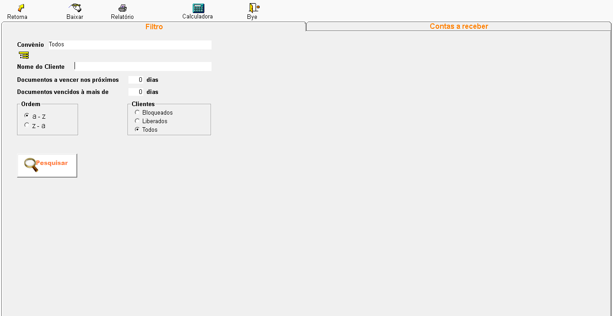
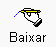

O que é Contas a Receber?
A tela de contas a receber de clientes em um sistema de farmácia é como um extrato detalhado de todas as dívidas que os seus clientes possuem com a farmácia.
+Filtro
- Convênio: Use este campo para selecionar um convênio específico e visualizar apenas as contas relacionadas a ele.
- Nome do Cliente: Digite o nome completo ou parte do nome do cliente para filtrar os resultados.
- Documentos a vencer nos próximos (X) dias: Defina um período de tempo para visualizar as contas que vencerão nos próximos dias.
- Documentos vencidos há mais de (X) dias: Utilize este filtro para encontrar contas que já estão vencidas há um determinado período.
- A-Z: Ordenação alfabética crescente pelo nome do cliente.
- Z-A: Ordenação alfabética decrescente pelo nome do cliente.
- Bloqueados: Mostra apenas os clientes com contas bloqueadas.
- Liberados: Mostra apenas os clientes com contas liberadas.
- Todos: Mostra todos os clientes.
- Botão "Pesquisar": Ao clicar neste botão, o sistema irá exibir uma lista com todas as contas a receber que correspondem aos critérios de filtro selecionados.

Esta tela permite que você personalize sua busca por contas a receber de clientes de forma rápida e eficiente. Utilize os filtros disponíveis para encontrar as informações que você precisa de maneira precisa.
+Contas a receber
- Valor Total: Mostra o valor total das contas selecionadas para pagamento.
- Conta: Permite selecionar a conta bancária onde o pagamento foi depositado.
- Recebido em: Data em que o pagamento foi recebido.
- Valor em Dinheiro, Cheque, Cartão, PIX, Troco: Campos para informar os valores pagos em cada forma de pagamento.
- Pagar Todos: Realiza a baixa de todas as contas selecionadas.
- Repartir Proporcionalmente: Permite dividir o valor pago entre as contas selecionadas de forma proporcional.
- Repartir o Pagamento: Permite distribuir o valor pago entre as contas selecionadas de forma personalizada.
- Alterar Vencimentos: Permite alterar a data de vencimento das contas.
- Liberar Descontos: Permite aplicar descontos nas contas.
- Alterar Juros + Multa: Permite alterar o valor de juros e multa das contas.
- Confirmar: Confirma as alterações realizadas e realiza a baixa das contas.
- Desistir: Cancela a operação e volta para a tela anterior.
Esta tela mostra um resumo detalhado de cada conta, mostrando numero de parcelas, data da entrada, vencimento, valor da conta, valor que foi fechado parcialmente, juro, multa e o total restante para pagamento.

para dar baixa em uma conta em aberto, selecione e clique

sera aberto a tela de baixa.